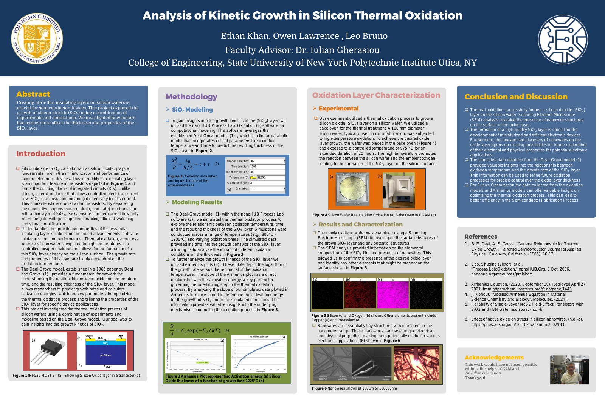

A hands-on fabrication study of how silicon dioxide grows on silicon wafers, combining furnace processing, Deal-Grove modeling, and SEM characterization. SiO₂ is the gate oxide, insulator, and passivation layer that modern CMOS depends on, so controlling its thickness precisely is a core process-engineering problem.
Process
| Parameter | Value |
|---|---|
| Wafer diameter | 100 mm |
| Oxidation temperature | 975 °C |
| Oxidation duration | 20 hours |
| Atmosphere | Controlled O₂, inert cooldown |
| Resulting oxide thickness | 200 to 300 nm |
Modeling
Oxidation was simulated in nanoHUB Process Lab using the Deal-Grove linear-parabolic model across 850 °C, 975 °C, 1100 °C, and 1225 °C, studying oxide thickness against time and temperature. Arrhenius plots were used to estimate activation energy and characterize the reaction kinetics governing growth.
Characterization and findings
SEM imaging confirmed silicon and oxygen at the surface and the presence of the SiO₂ layer, and revealed nanowire structures that formed unexpectedly after oxidation. That discovery took second place at the 2024 SUNY Polytechnic Student Project Showcase and may warrant follow-up for nanoelectronics and sensing applications.
Research poster

With Leo Bruno and Owen Lawrence. Faculty advisor: Dr. Iulian Gherasiou, SUNY Polytechnic Institute, College of Engineering.